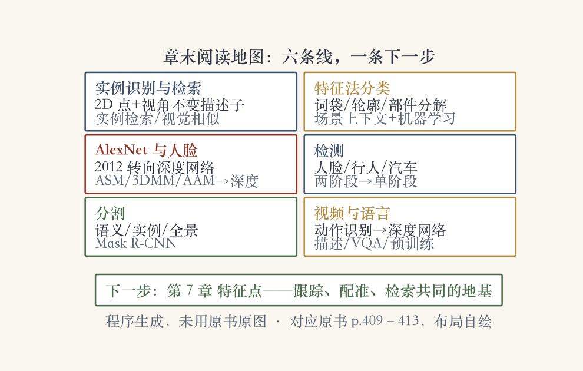
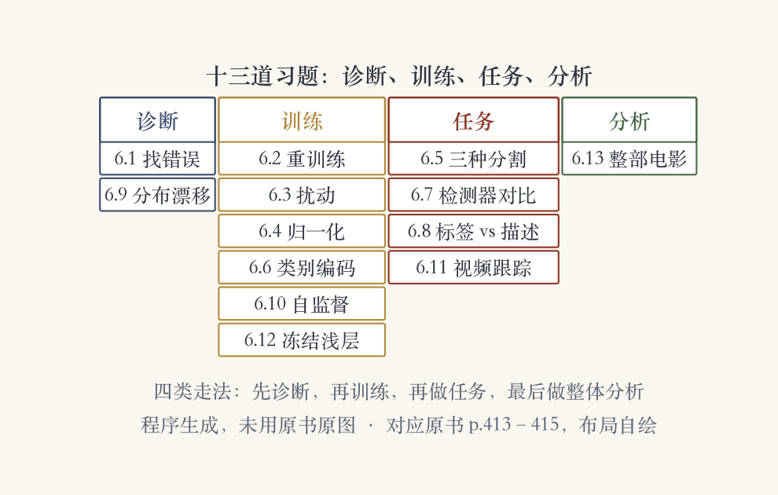
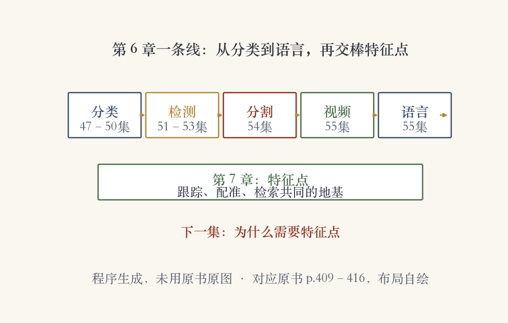

开场 · 章末收尾
先看地图，再做题目
识别章已走完：分类、人脸、检测、分割。
章末还有视频、语言、阅读指南和习题。
这一集：一张阅读地图，十三道题。
地图管方向，题目管检验。
依据：原书第 409–416 页
本集两件事
阅读指南：按主题排代表工作
习题：从预训练网络到整部电影
先读什么、会不会用，一起收尾
正课第五十六集
01 / 16
章末阅读 · 指南总览
教材给基础，教程给进展
没有最新的专门教材或综述。
老综述讲深度学习之前的路子。
最新材料看 ICCV、CVPR、ECCV 教程。
排行榜数据集也是找新论文的入口。
依据：原书第 409 页
阅读策略
综述与文集：补历史
大会教程：补现在
排行榜：顺着新论文走
正课第五十六集
02 / 16
章末阅读 · 实例识别与检索
从认物体到找同款
实例识别：静态人造物体，姿态会变。
方法：二维兴趣点加视角不变描述子。
实例检索：基于内容的图像检索。
下一章 7.1.4 节接着讲；也连着视觉相似搜索。
依据：原书第 409–410 页

六条阅读线：实例识别与检索、特征法分类、AlexNet 与人脸、检测、分割、视频与语言；下一步第 7 章特征点｜程序生成，未用教材或论文原图
正课第五十六集
03 / 16
章末阅读 · 特征法分类
局部、部件、场景三层证据
词袋、关键点，或轮廓与形状上下文。
部件分解让模型对关节和姿态更稳。
图模型：树、星形、k 扇、星座。
场景上下文、机器学习、大规模标注库。
依据：原书第 410 页
三层证据
局部：这一块像什么
部件：怎么摆
场景：整幅合不合理
正课第五十六集
04 / 16
章末阅读 · AlexNet 与人脸
手工特征退场，深度网络登场
AlexNet 2012 把重心转向深度网络。
更深网络、更好训练、更大无标注数据。
人脸：特征距离 → 子空间 → 形状模型。
转向深度后，形状模型做正面化，也用数据增强。
依据：原书第 410–411 页
人脸三代方法
早期：比特征距离
中期：低维子空间投影
后期：ASM / 3DMM / AAM
正课第五十六集
05 / 16
章末阅读 · 检测史
从专门类别到通用检测器
整图分类之后，转向多物体检测。
早期按人脸、行人、汽车分别研究。
两阶段：区域提议加多路分类器。
单阶段：SSD、RetinaNet、YOLO。
依据：原书第 411–412 页
两条路线
两阶段：R-CNN / Fast / Faster / FPN
单阶段：一次输出多个位置
两阶段先找候选，单阶段边看边报
正课第五十六集
06 / 16
章末阅读 · 分割回顾
语义铺满，实例数清，全景都要
语义：这是什么材质。
实例：这是哪一个可数物体。
全景：材质还是物体，都要标。
Mask R-CNN：检测器加逐物体分割。
依据：原书第 412 页
分割路线
早期：预分割匹配、条件随机场
现代：金字塔全卷积
实例：检测器 + 逐物体分割
正课第五十六集
07 / 16
章末阅读 · 视频与语言
用一句短话说清一段视频
动作识别研究追到 1990 年代。
这十年转用深度网络。
完整句描述在 2010 年代初升温。
再往后是视觉问答与视觉对话。
依据：原书第 412–413 页
视频到语言
动作识别：先看有没有动
图像描述：把画面写成句子
VQA：指着画面提问
正课第五十六集
08 / 16
习题课 · 十三题总览
诊断、训练、任务、分析
6.1–6.2：预训练找错，再重训练。
6.3–6.6：扰动、归一化、分割、编码。
6.7–6.9：检测器、标签与描述、分布漂移。
6.10–6.13：自监督、跟踪、冻结浅层、整部电影。
依据：原书第 413–415 页

十三道习题矩阵：诊断/训练/任务/分析四类；6.1–6.13 逐题归位｜程序生成，未用教材或论文原图
正课第五十六集
09 / 16
习题课 · 第 6.1 题
先看怎么错：混淆矩阵
找一个预训练网络，分类或分割都行。
看它最常犯哪几类错误。
混淆矩阵：哪些类别被认成哪些。
换自己的数据：网页搜的或手机相册。
依据：原书第 413 页
6.1 做法
预训练网络：分类/分割/人脸/行人
混淆矩阵：行真实、列预测
Detectron2 + Colab 改图片地址
正课第五十六集
10 / 16
习题课 · 第 6.2 题
再动手：重训练与自建数据
拿原数据重训练，改层数、通道、参数。
也可以加样本，看能不能更合意。
在线教程教从头训练；也可自建数据集。
最后写下训练过程、坑和发现。
依据：原书第 414 页
6.2 关键
自建数据：网页搜索 + 标注
低成本做法：信搜索结果当标签
Russakovsky、Kovashka 讨论过标注难度
正课第五十六集
11 / 16
习题课 · 第 6.3+6.4 题
训练细节：扰动与归一化
6.3：左上角贴按类唯一的颜色方块。
用 ResNet、EfficientNet 或 ViT 从零训练。
看是否只认颜色；评估时对抗换色。
6.4：ViT 去掉中间层归一化，比较损失地形。
依据：原书第 414 页
两道题问什么
6.3：模型有没有偷懒
6.4：归一化帮了什么忙
都把训练里的隐形假设翻出来
正课第五十六集
12 / 16
习题课 · 第 6.5+6.6 题
任务与表示：分割互转，编码升级
6.5：三种分割的区别。
再想：每种能否后处理成另外两种。
6.6：类别用 one-hot，再过嵌入矩阵。
比较向量嵌入与 one-hot 的优劣。
依据：原书第 414–415 页
两题考什么
6.5：任务边界能不能互转
6.6：表示为什么重要
表示决定模型能学到什么
正课第五十六集
13 / 16
习题课 · 第 6.7–6.9 题
对比与漂移：代价、监督、泛化
6.7：DETR、Faster-RCNN、YOLOv4 参数量。
在 MS COCO 上训练，比较速度与单图推理。
6.8：类别标签与自然语言描述的差异。
6.9：ImageNet 预训练，零微调评 ImageNet Sketch。
依据：原书第 415 页
三题各自问
工程代价：参数量与速度
监督信号：标签能问多细
泛化边界：出了训练集还灵不灵
正课第五十六集
14 / 16
习题课 · 第 6.10–6.12 题
自监督与迁移：别从零开始
6.10：静态图、视频、视觉-语言的自监督任务。
6.11：跟踪比逐帧独立预测好在哪里。
6.12：分类骨干改 YOLO，微调新头。
再想：为什么值得冻结浅层。
依据：原书第 415 页
三题一条线
标签从哪来
时间上要不要记住
哪些知识可以复用
正课第五十六集
15 / 16
习题课 · 第 6.13 题与小结
从分类到语言，再交棒特征点
6.13：整部电影的长序列要改什么。
十三道题都能落回本章的一个方法。
本章路线：分类→人脸→检测→分割→视频→语言。
下一章：两张图的同一个点怎么找、怎么对。
依据：原书第 409–416 页

第 6 章一条线：分类→检测→分割→视频→语言→第 7 章特征点｜程序生成，未用教材或论文原图
正课第五十六集
16 / 16